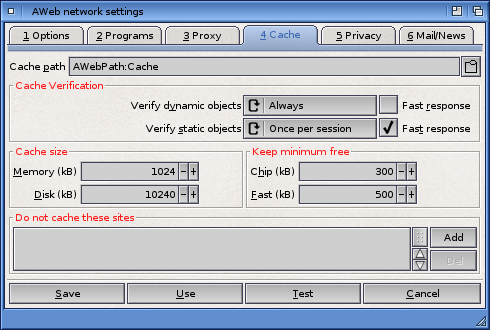

Network settings: Cache

AWeb uses a cache on your harddisk to store objects. It will use the directory you configure here as its cache directory. Note that you should create a new directory, or use an empty one for AWebs cache. Don't use the cache directory for anything else but AWebs cache.
Type the full path name, or click the button to pop up a standard drawer requester.
Note that if you change this setting it does not become active when you Use or Save the settings. In order to avoid an inconsistent cache, AWeb will continue to use the current cache directory until you quit AWeb. The next time you start AWeb the new directory will be used.
Verify cache copy
Use this chooser to set the verification mode. Once per session is the recommended setting.
Fast response
Check this checkbox if you want fast response from the cache.
Use these two gadgets to set the maximum size to use for the cache in memory and on your harddisk.
All sizes should be given in KiB.
Minimum free memory
These two gadgets determine the minimum amount of chip and fast memory that AWeb should leave free. If there is less memory free than what is set here, AWeb will flush objects from memory. Usually these objects remain on your harddisk.
If you specify more memory than can possibly be freed (e.g. a non-zero fast memory limit on a machine with no fast memory), AWeb will continuously flush all documents and images. So be careful what you enter here.
Sizes are in KiB.
If this list contains site names (also known as locations or host names), then documents and images from these sites will not be stored in the cache.
Use the Add button to add a new entry, and the Del button to delete the currently selected entry. Double-click on an entry to edit the name in place.
You may type simple host names, or use pattern matching. If a string contains pattern matching characters, it's matched against the full url, not only the host name. This enables you to selectively cache or not cache files from a server.
 Proxy
Proxy  Settings requesters
Settings requesters  Privacy
Privacy